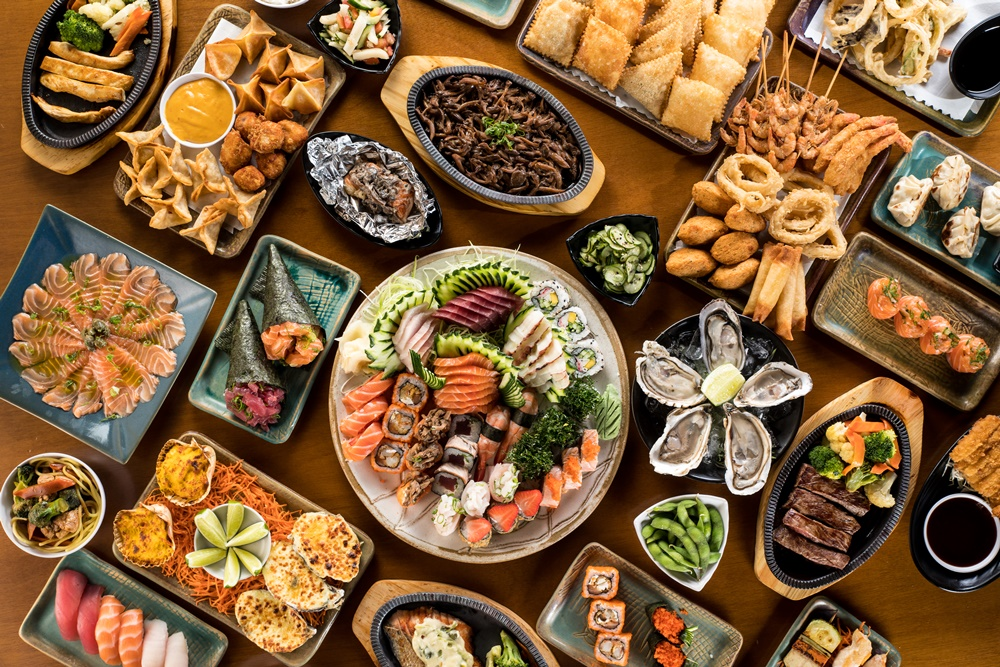

CULTURA JAPONESA
Animes
Animes são desenhos animados ou séries de animação originários do Japão, conhecidos por seus estilos artísticos únicos, tramas complexas e personagens bem desenvolvidos. Embora muitos animes sejam direcionados ao público jovem, há uma ampla variedade de gêneros e faixas etárias, incluindo ação, aventura, fantasia, drama, romance e até ficção científica. Animes frequentemente abordam temas profundos, como amizade, superação, justiça e dilemas filosóficos. Além de sua popularidade no Japão, os animes ganharam um enorme público global, influenciando culturas ao redor do mundo, com títulos icônicos como Naruto, Dragon Ball, One Piece, My Hero Academia e Attack on Titan.
Costumes
Os costumes japoneses são profundamente influenciados pela tradição, respeito e etiqueta. A sociedade japonesa valoriza a harmonia social, a disciplina e o respeito mútuo. Algumas práticas notáveis incluem a saudação com uma reverência (bow), que varia em profundidade conforme o respeito ou formalidade da situação. No cotidiano, o ato de tirar os sapatos ao entrar em uma casa ou estabelecimento tradicional, como templos e alguns restaurantes, é comum. Além disso, a etiqueta à mesa é rigorosa, com ênfase no uso correto dos hashis (pauzinhos) e na não enfiar os hashis na comida, especialmente em arroz, o que remete a rituais funerários. As celebrações também refletem esses valores, com festivais como o Hanami (observação das flores de cerejeira) e o Obon (uma festa que homenageia os espíritos dos ancestrais). O respeito pela natureza, pela família e pela tradição são elementos centrais na cultura japonesa.
Culinária
A culinária japonesa é conhecida por sua simplicidade, frescor e ênfase em ingredientes sazonais e de alta qualidade. Pratos típicos incluem sushi (arroz temperado com vinagre e peixe cru), sashimi (fatias de peixe cru), ramen (sopa de macarrão com caldo saboroso), tempura (frutos do mar e vegetais empanados e fritos) e teriyaki (carne grelhada com molho adocicado). O arroz é um alimento básico, sendo consumido em quase todas as refeições, e o miso (pasta de soja fermentada) é frequentemente usado em sopas e temperos. A apresentação dos pratos é muito valorizada, e o equilíbrio de sabores como doce, salgado, ácido e umami é essencial. Além disso, a culinária japonesa inclui técnicas refinadas como o uso de fermentação e defumação. O chá verde (matcha) é a bebida tradicional, e sobremesas como mochi (bolinhos de arroz glutinoso) e dorayaki (panquecas recheadas com feijão doce) são populares.
Eventos
Os eventos japoneses refletem tradições culturais e celebrações sazonais importantes. Alguns dos mais notáveis incluem:
Hanami (março/abril): A observação das flores de cerejeira, uma tradição que simboliza a transitoriedade da vida, com amigos e famílias se reunindo em parques para apreciar a beleza das flores.
Obon (agosto): Uma festividade para homenagear os espíritos dos ancestrais, com danças tradicionais chamadas bon odori e visitas a túmulos.
Ano Novo (Shogatsu) (1º de janeiro): A celebração do início do novo ano, com cerimônias no templo, pratos tradicionais como osechi (comida festiva) e a troca de cartões de Ano Novo.
Tanabata (julho): Uma celebração baseada em uma lenda sobre dois amantes separados pela Via Láctea, marcada por festivais em que as pessoas escrevem desejos em tiras de papel e as penduram em bambus.
Setsubun (fevereiro): O festival de primavera, onde as pessoas jogam grãos de soja para afastar os maus espíritos e trazer boa sorte.
Esses eventos refletem a forte conexão do Japão com suas tradições, natureza e espiritualidade.